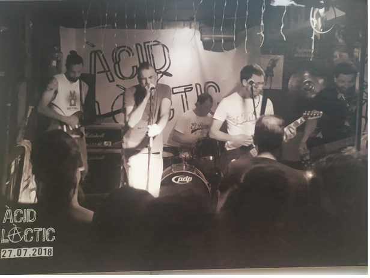

BIOGRAFIA
El grup Àcid làctic es va formar a l’estiu del 2018. Té una tendència punk, amb lletres acurades i un so característic i treballat a cada versió nova.
Tots els components són de Felanitx i es coneixen de fa anys, alguns són família i si no ho són, com si ho fossin. La idea principal és la de disfrutar i fer una música pròpia amb caràcter social i reivindicatiu.
- Joan Toni, el bateria, és l’ànima indiscutible del grup, ritme de base mitjançant timbals.
- Pere Antoni, el vell, cantant, prepara cada lletra d’una manera acurada i cercant sempre l’enteniment social amb una crítica constructiva.
- Tomeu Pavia és el guitarrista arpegiador. Incombustible treballador dels sons corporatius dels temes.
- Pere Antoni, el jove, guitarrista solista i solitari, duu a terme les sonoritats agudes dels temes de la banda
- Mitos, el baixista és l’encarregat de puntualitzar els ritmes dels temes de forma coherent, sembra la calma de cada un dels temes.
